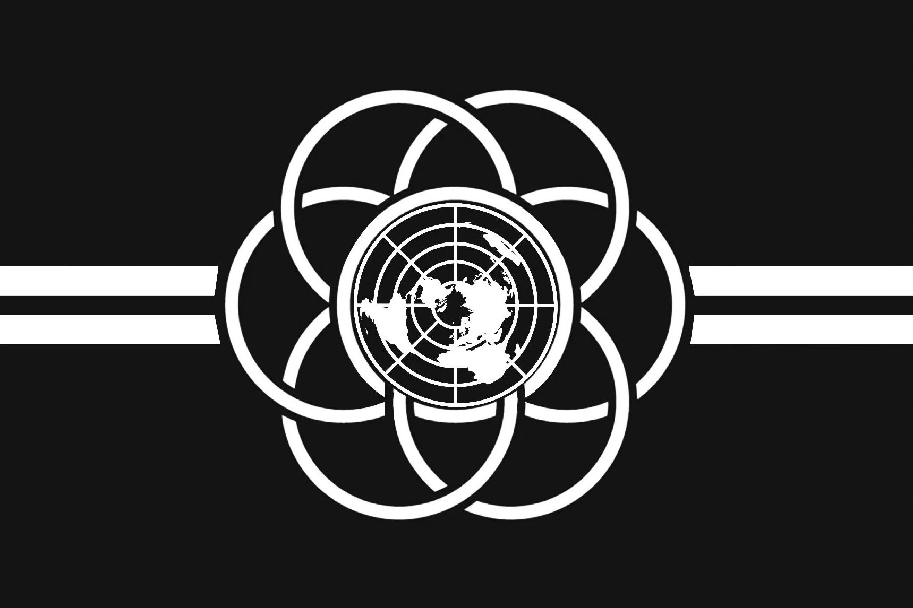

NCC
No Copyright Code
NCC — No Copyright Code — is my personal brand and the home for everything I build. It is based upon a trivial premise: make useful things for the sole sake of improving the world.
Most of my projects under NCC are generated with great assistance and leadership from AI. I bring the questions, the direction, and the stubbornness to finish; AI brings speed, breadth of knowledge, and the technical capabilities to help execute objectives. Together, we turn ideas into working tools.
None of this is built for a commercial purpose. There are no subscriptions, no paywalls, and no hidden agenda. The code exists to be read, used, changed, and shared by anyone who finds it helpful.
The goal is to improve quality of life for all humans — whether that means saving someone a few minutes each day, solving a frustrating problem, or simply showing what is possible when people and machines work side by side.
NCC is also part of my unending pursuit of life's purpose. Building, learning, and giving back are how I search for meaning, and every project is another step along that path.
Thank you for being here. Take what helps you, and pass it on.
